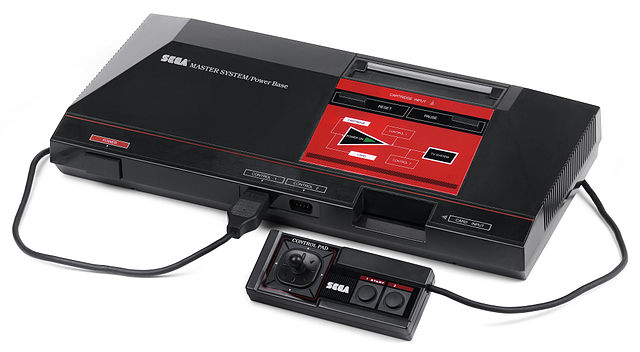
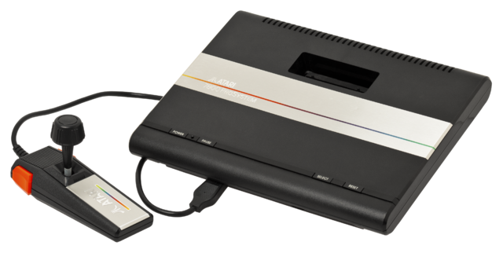
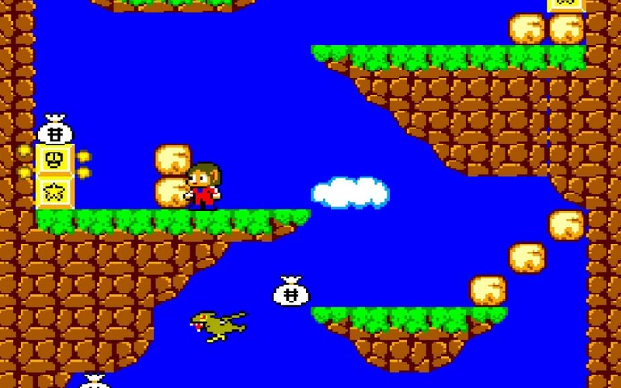
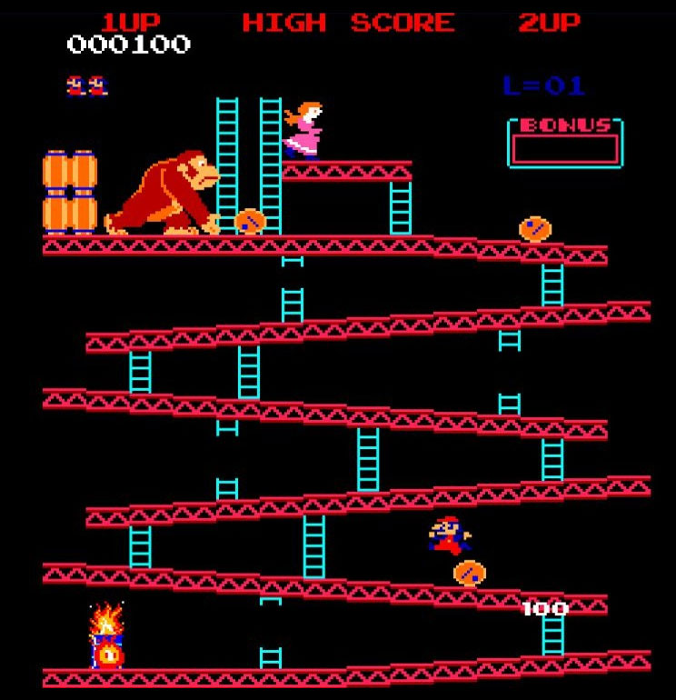
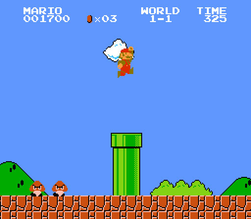

A 3ª Geração
Luiz Felipe Manoel
A terceira geração de consoles surgiu em meio a uma crise na indústria de jogos, o público considerava que video games sempre eram mais do mesmo, e aos poucos abandonariam seus consoles por não estarem mais atraídos.
Com a chegada dos novos consoles iniciou-se a nova era dos 8 bits, com cenários bidimensionais com paleta de até 256 cores, trazendo uma qualidade gráfica dobrada, experiência mais completa e divertida para todos.
Famicon/NES/Nintendinho

Entre as empresas que abriram as portas para a terceira geração, lá estava a Nintendo com um dos seus maiores sucessos, o Famicon(chamado assim no japão pois significa diversão para toda a família), nos Estados Unidos teve seu nome alterado para Nintendo Entertainment System, e no Brasil foi conhecido como Nintendinho, o console acompanhava o começo de um dos maiores clássicos no mundo dos games: Super Mario Bros, um game feito a partir do personagem do game Donkey Kong
Master System

Lançado ao mesmo tempo do NES, o master system foi a resposta da SEGA ao console 8 bits da nintendo, a princípio as vendas do console não foram das melhores, pois a Nintendo tinha contrato de jogos exclusivos com diversas empresas fazendo com que a SEGA se complicasse em lançamentos exclusivos, fora a dificuldade de concorrer com o NES no Japão e a exportação para os Estados Unidos realizada por outra empresa não foi uma boa escolha por falta de Marketing. No Brasil o Master System foi marcado pela parceria com a Tectoy e acabou sendo um grande sucesso no país. Como jogos com mais destaques tivemos Sonic the Hedgehog e Alex Kidd liderando as vendas e virando febre.
Atari7800

Enquanto a Nintendo liderava o mercado internacional, a SEGA tentava tirar sua fatia, a Atari, tentou emplacar um novo console para substituir o fracasso do Atari 5200, mas não deu muito certo pois mesmo possuindo um hardware superior ao de seus concorrentes as empresas já haviam fechado contratos de jogos exclusivos com a Nintendo fazendo com que o acervo do Atari7800 acabasse escasso e sem muitas opções, tornando assim este o último suspiro da Atari no mundo dos consoles. No Brasil a gradiente detinha os direitos da marca Atari no país, mas após o fracasso do 5200 decidiram não investir no console, migrando seus fundos para o Phantom System, clone do NES.
Jogos em destaque
Alex Kidd

Donkey Kong

Super Mario Bros

Sonic The Hedgehog